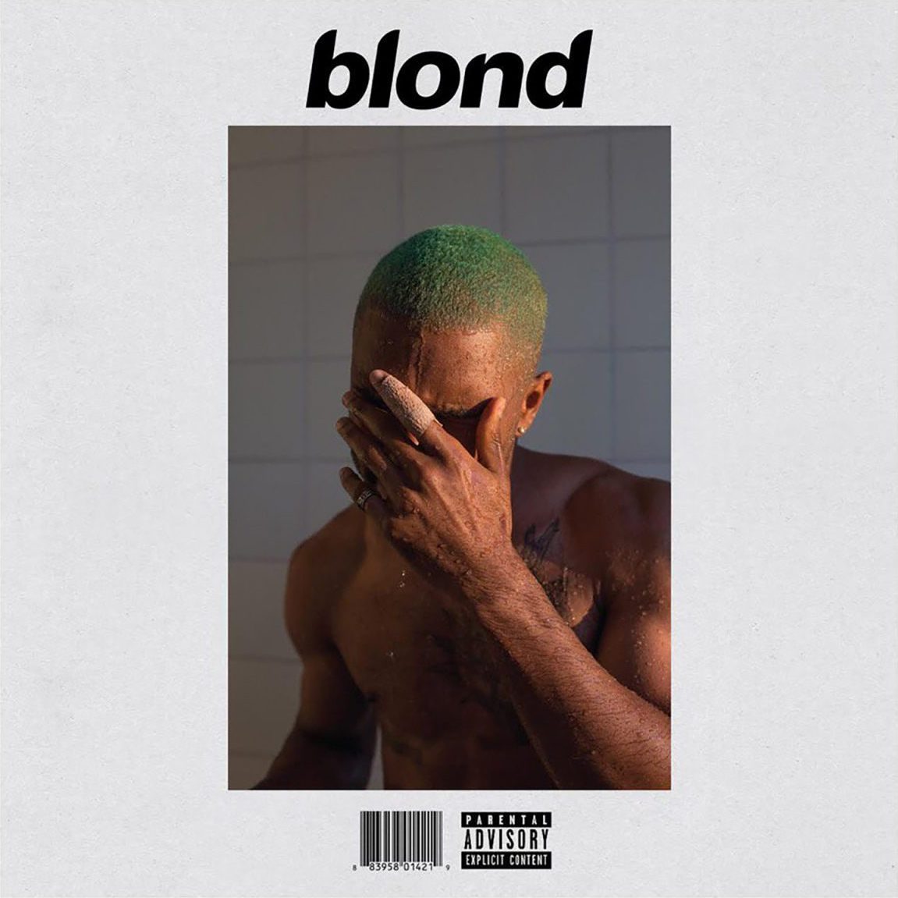
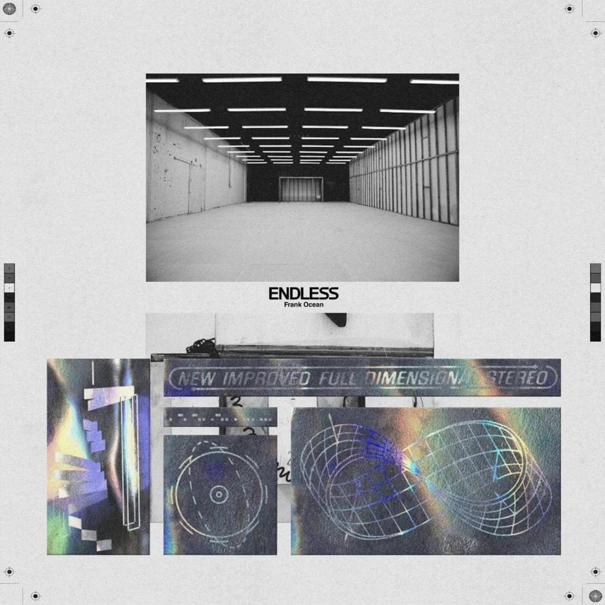
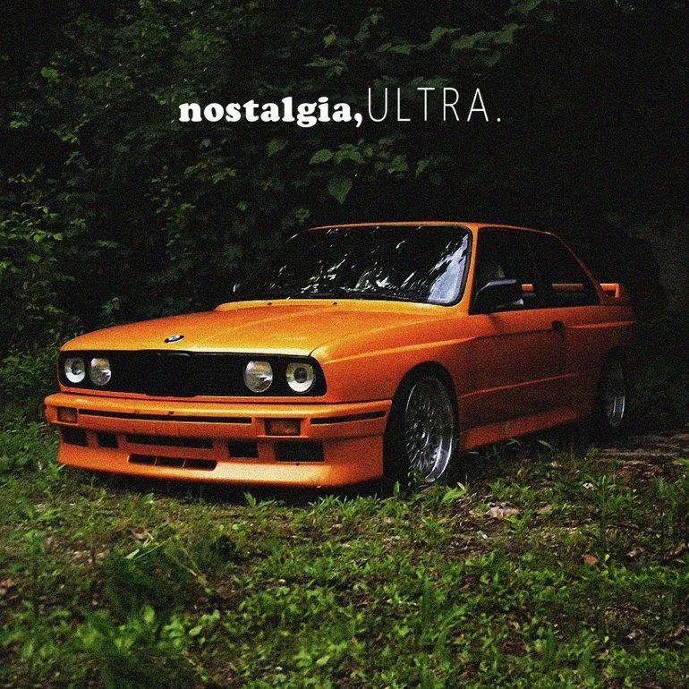

blond
August 20, 2016
Blonde (alternatively titled blond) is the second studio album by American singer Frank Ocean. It was released as a timed exclusive on the iTunes Store and Apple Music, and followed the August 19 release of Ocean's video album Endless.
The album features guest vocals from André 3000, Beyoncé, and Burrell, among others. Production was handled by Ocean himself, alongside a variety of high-profile record producers, including Malay and Om'Mas Keith, who collaborated with Ocean on Channel Orange, as well as James Blake, Jon Brion, Buddy Ross, Pharrell Williams, and Rostam Batmanglij, among others.

ENDLESS
August 19, 2016
Endless is a visual album by American singer Frank Ocean. It was released as an exclusive streaming-only video on Apple Music, and preceded the August 20 release of Ocean's second studio album Blonde. Endless was later remastered and had a limited reissue in physical audio and visual formats on April 10, 2018.
The album followed a period of controversy for Ocean, who was in a highly publicized battle with Def Jam Recordings, and it was the subject of widespread media discussion upon release. Endless was recorded in various studios across California, as well as in London, Miami, and Berlin, with production handled primarily by Ocean, Vegyn, Michael Uzowuru, and Troy Noka; Ocean previously collaborated with Noka on his debut mixtape, Nostalgia, Ultra (2011).

channel ORANGE
July 10, 2012
Channel Orange (stylized as channel ORANGE) is the debut studio album by American R&B singer-songwriter Frank Ocean. It was released by Def Jam Recordings. After releasing his mixtape Nostalgia, Ultra the previous year, Ocean began writing new songs with Malay, a producer and songwriter who then assisted him with recording Channel Orange at EastWest Studios in Hollywood.
Rather than rely on samples as he had with his mixtape, Ocean wanted to approach sound and song structure differently on the album. Other producers who worked on the album included Om'Mas Keith and Pharrell Williams. Its recording also featured guest appearances from Odd Future rappers Earl Sweatshirt and Tyler, the Creator, vocalist/songwriter André 3000, and guitarist John Mayer.

nostalgia, ULTRA.
February 16, 2011
Nostalgia Ultra (stylized as nostalgia,ULTRA. and occasionally nostalgia/ultra) is the debut mixtape by American singer-songwriter Frank Ocean. He was inspired to make the mixtape after Hurricane Katrina in his native New Orleans and his subsequent relocation to Los Angeles.
After joining alternative hip hop group Odd Future in 2010, he self-released the mixtape, without initial promotion. Nostalgia, Ultra has a unique R&B aesthetic and features surreal themes and nostalgic lyrics.
The songs mostly focus on interpersonal relationships, personal reflection, and social commentary. Following its release, the mixtape received rave reviews from music critics. The cover features a picture of a bright orange BMW E30 M3, Ocean's "dream car", in plain sight amidst lush greenery.
© 2022 Frank Ocean, LLC.
All Rights Reserved.